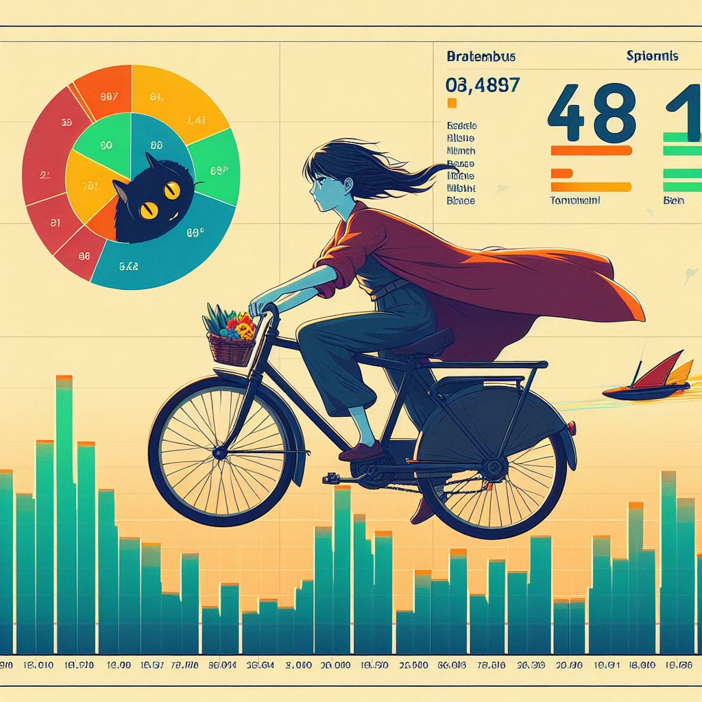
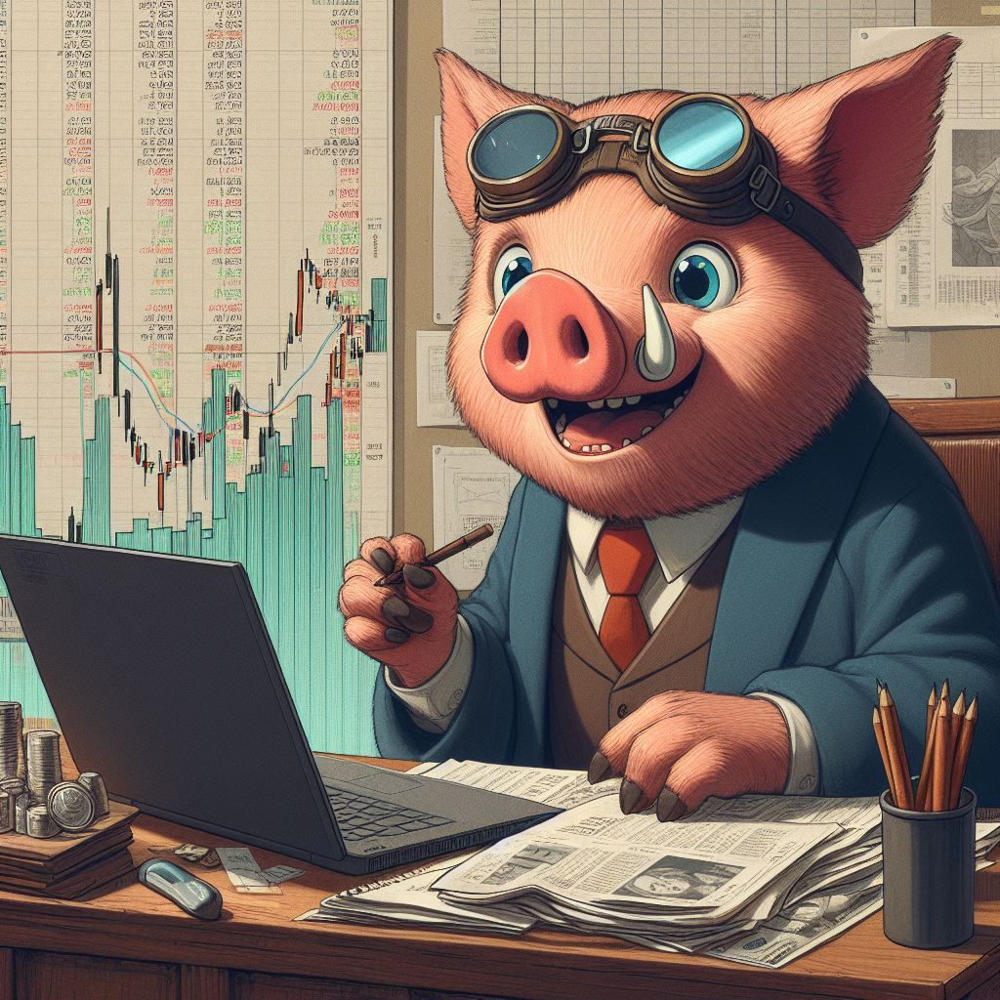
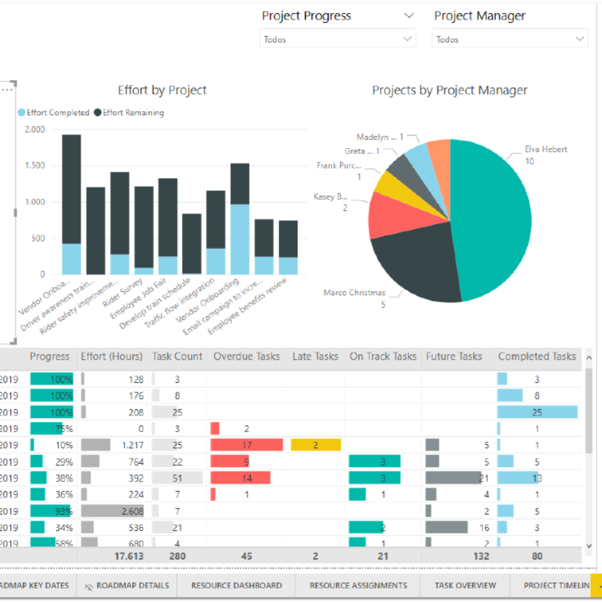
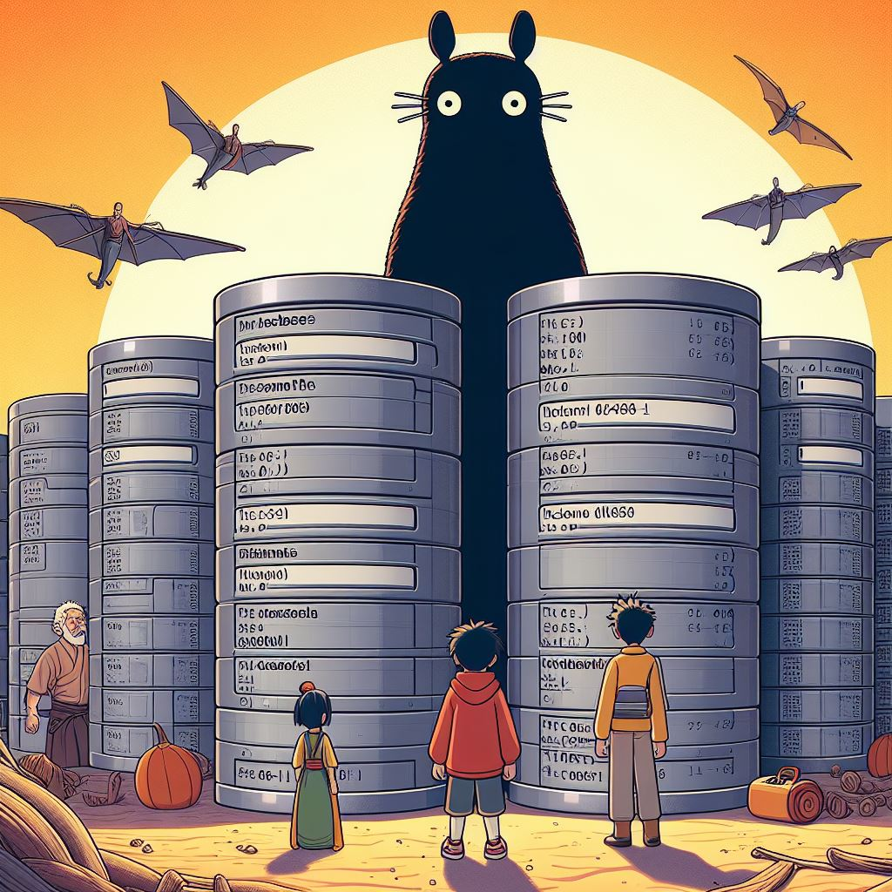
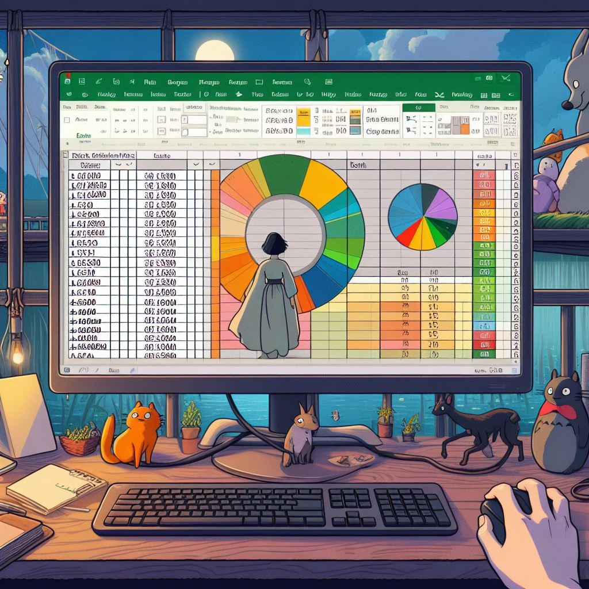
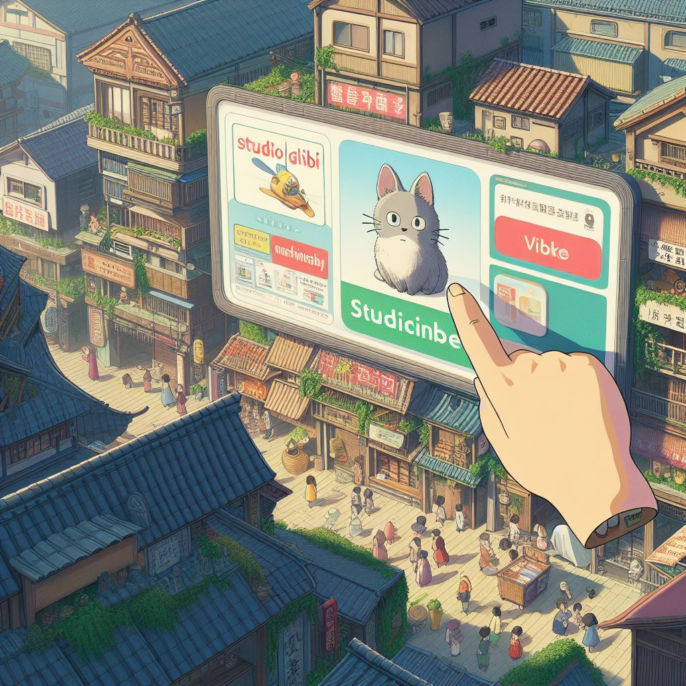

Power BI dashboard report which is uploaded online to Power BI Service as part of my journey as a Business Intelligence Analyst for AdventureWorks Cycles with the PowerBI Desktop course.
The Project includes Connecting & Shaping Data, Creating a Relational Data Model, Adding Calculated Fields with DAX and Visualizing Data with Reports.


In this portfolio project we will be looking at data from the stock market, particularly some technology stocks. We will use pandas to get stock information, visualize different aspects of it, and finally we will look at a few ways of analyzing the risk of a stock, based on its previous performance history. We will also be predicting future stock prices through a Monte Carlo method.

PowerBI Dashboard Projects for Adventure Works Project, Maven Analytics Dashboard Project, and more.

A comprehensive project involving raw csv data and using MYSQL and various SQL techniques to perform EDA and data cleanup

A comprehensive financial analysis using Excel to analyze bike sales data to create an interactive dashboard. The dynamic dashboards created allowed for real-time tracking of sales performance.
The idea is to use the power of Convolutional Neural Networks(CNN) in my project.This idea originally encountered after watching an anime, where a computer was able to play the basic Rock, Paper, Scissor game with an opponent.
Website Vs Mobile App.
We got some contract work with an e-commerce company based in New York City that sells clothing online but they also have in-store style and clothing advice sessions. Customers come in to the store, have sessions/meetings with a personal stylist, then they can go home and order either on a mobile app or website for the clothes they want. The company is trying to decide whether to focus their efforts on their mobile app experience or their website

In this project we perform Object tracking, which is implemented with YOLOv4, DeepSort, and TensorFlow. YOLOv4 is a state of the art algorithm that uses deep convolutional neural networks to perform object detections.

US Election Data Analysis Project for the year 2012 (Obama v/s Romney). We have analyzed the aggregated poll data and answered some key questions. We also worked with a Donors Dataset whch will help us gain more insights about the election

Our marketing team prepared 10 ads, which are on the brand new SUV. All the ads have different designs. The advertising team needs to know which ad will result in most no. of clicksby the user.
I have worked and explained the Perception Model used for self driving car analysis. Do check it out and HAVE FUN!!!!